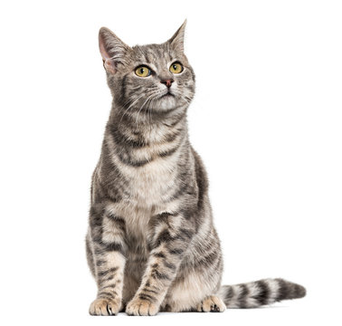
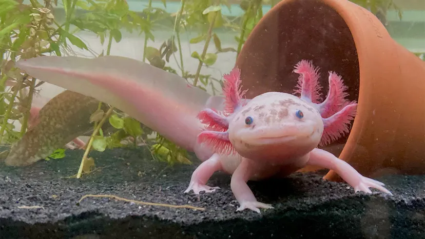
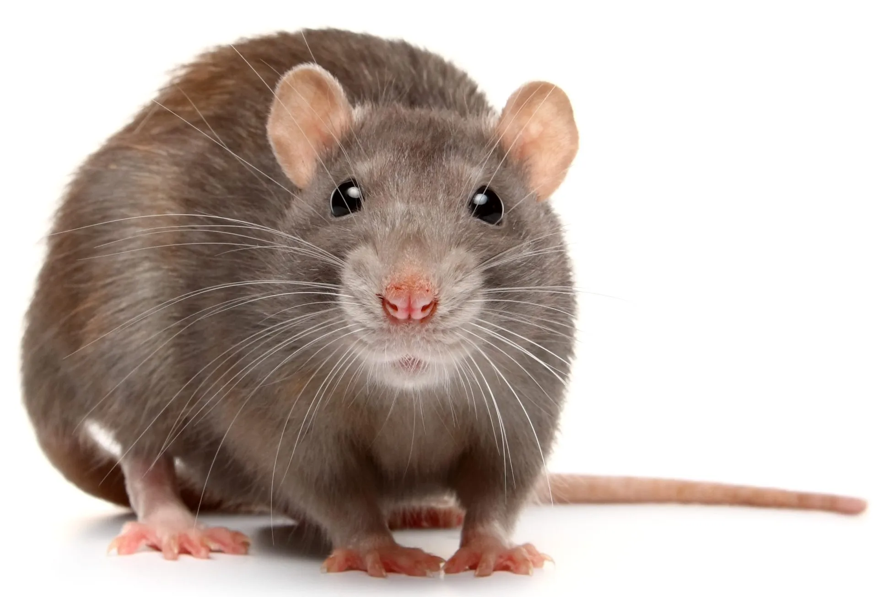

En Adopt a Pet-Friend les presentamos nuestros amigos para que puedan conseguir un lugar donde puedan vivir plenamente
- Resiak - Perro
- Homero - Gato
- Remiel - Ajolote
 Blobber - Pez payaso
Blobber - Pez payaso- Nikolov - Ratón
En Adopt a Pet-Friend les presentamos nuestros amigos para que puedan conseguir un lugar donde puedan vivir plenamente
Blobber - Pez payaso